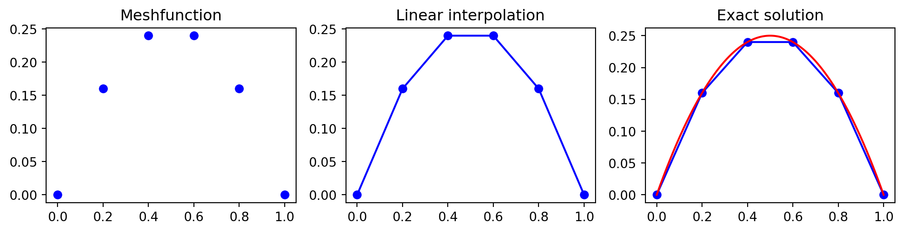
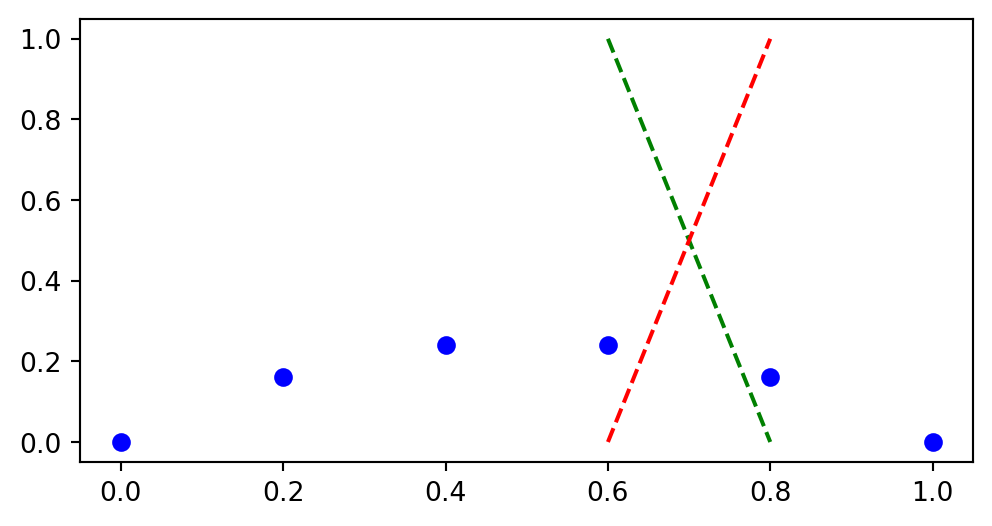

Postprocessing and Interpolation
MATMEK-4270
Postprocessing
We have computed the solution. Now what?
- We analyze the solution!
- We process the solution into presentable tables and figures
- We extract important numbers that the solution allows us to compute. For example lift or drag on an airplane wing, or the flux through a boundary.
In order to achieve this we need
- Interpolation - to get the solution everywhere and not just in nodes
- Integrals - Averages arise from integrals over domains and boundaries
- Derivatives - For example, drag is the integral of the gradient over a boundary \(\int_{\Gamma}\nu \nabla u \cdot \boldsymbol{n} d\Gamma\).
- Lagrange interpolation polynomials will help us get there!
One-dimensional interpolation
\[ u(x) = x(1-x) \]
We have the mesh function \((u(x_i))_{i=0}^{5}\). What is \(u(0.75)\)?
Linear interpolation requires interpolating between \(u(x_3)\) and \(u(x_4)\)
\[ \overline{u}(x) = u_3 + (u_4-u_3)\frac{x-x_3}{x_4-x_3}. \]
Linear interpolation using Sympy
Linear interpolation is not very accurate. How do we increase accuracy?
Lagrange interpolation
Lagrange interpolation is a generic approach that uses any number of points from the mesh function and defines a Lagrange interpolation polynomial
\[ L(x) = \sum_{j=0}^k u^j \ell_j(x) \]
where \(\{u^j\}_{j=0}^k\) are the mesh function values at the chosen \(k+1\) mesh points. For the linear example we have just seen
\[ (u^0, u^1) = (u_3, u_4) \]
Note
Lagrange mesh function values are given a superscript that starts counting from 0.
Lagrange basis functions and nodes
The Lagrange interpolation polynomial \[ L(x) = \sum_{j=0}^k u^j \ell_j(x) \]
contains \(k+1\) basis functions \(\{\ell_j(x)\}_{j=0}^k\).
The basis functions are defined using any number of chosen interpolation nodes \((x^0, \ldots, x^k)\). For our linear example the nodes are simply
\[ (x^0, x^1) = (x_3, x_4) \]
Note
Lagrange nodes are given a superscript that starts counting from 0. Choosing different nodes leads to different results!
Lagrange basis functions are defined as
\[ \ell_j(x) = \frac{x-x^0}{x^j-x^0} \cdots \frac{x-x^{j-1}}{x^j-x^{j-1}}\frac{x-x^{j+1}}{x^j-x^{j+1}} \cdots \frac{x-x^{k}}{x^j-x^{k}} \]
Let that one sink in.
- Note index \(j\) in \(\ell_j(x)\), the \(j\)’th basis function.
- Numerator contains the product of all differences \((x-x^m)\) for all \(m\) except \(m=j\)
- Denominator contains the product of all differences \((x^j-x^m)\) for all \(m\) except \(m=j\)
We can write
\[ \ell_j(x) = \prod_{\substack{0 \le m \le k \\ m \ne j}} \frac{x-x^m}{x^j-x^m}. \]
Lagrange basis in Sympy
A basis is a collection of basis functions
\[ \{\ell_j(x)\}_{j=0}^k \]
def Lagrangebasis(xj, x=x):
"""Construct Lagrange basis for points in xj
Parameters
----------
xj : array
Interpolation points (nodes)
x : Sympy Symbol
Returns
-------
Lagrange basis as a list of Sympy functions
"""
from sympy import Mul
n = len(xj)
ell = []
numert = Mul(*[x - xj[i] for i in range(n)])
for i in range(n):
numer = numert/(x - xj[i])
denom = Mul(*[(xj[i] - xj[j]) for j in range(n) if i != j])
ell.append(numer/denom)
return ell The basis for linear interpolation of our first example is
We can plot these two linear functions between \(x_3\) and \(x_4\)
Lagrange interpolation polynomial
With the basis we can now compute the Lagrange interpolation polynomial
\[ L(x) = \sum_{j=0}^k u^j \ell_j(x) \]

We can choose any, and any number of basis functions
Choose \((x^0, x^1, x^2) = (x_2, x_3, x_4)\)
With three nodes the Lagrange basis functions are second order polynomials
plt.figure(figsize=(6, 4))
ell2 = Lagrangebasis(xj[2:5], x=x)
plt.plot(xj, u, 'bo-')
xl = np.linspace(xj[2], xj[4], 100)
plt.plot(xl, sp.lambdify(x, ell2[0])(xl), 'r:')
plt.plot(xl, sp.lambdify(x, ell2[1])(xl), 'g:')
plt.plot(xl, sp.lambdify(x, ell2[2])(xl), 'b:')
plt.legend([r'$u(x_i)$', r'$\ell_0(x)$', r'$\ell_1(x)$', r'$\ell_2(x)$'], loc='upper left'); Note
All Lagrange basis functions are such that on the chosen mesh points \(\{x^{i}\}_{i=0}^{k}\) we have
\[ \ell_j(x^i) = \delta_{ij} = \begin{cases} 1 \text{ for } i=j \\ 0 \text{ for } i\ne j \end{cases} \]
Note
The Lagrange basis functions do not depend on the mesh function values, only on the mesh points. The mesh points do not need to be uniform, any mesh will do as long as all points are different.
Interpolation of derivatives
The solution has been obtained in mesh points \(\boldsymbol{u}=(u(x_j))_{j=0}^N\). How can we compute \(u'(x)\) for any given \(x\)?
Can we use the derivative matrix \(D^{(1)}\) and thus
\[ \boldsymbol{f} = D^{(1)} \boldsymbol{u} \]
such that the mesh function \(\boldsymbol{f}=(u'(x_j))_{j=0}^N\)?
Yes, but you then need to interpolate \(\boldsymbol{f}\)!
Is there a better way?
Yes! Just take the derivative of the Lagrange function
\[ u' \approx L'(x) = \sum_{j=0}^k u^j \ell'_j(x) \]
If the problem is two-dimensional, then we have the solution as a mesh function
\[ u_{ij} = u(x_i, y_j), \quad i=0, 1, \ldots, N \, \text{and} \, j=0, 1, \ldots, N \]
How do we use \(U = (u_{ij})_{i,j=0}^N\) to compute \(u(x, y)\) for any point \((x, y)\) in the domain?
2D interpolation
We need to do interpolation in 2D!
2D-interpolation
We consider first a simple function
\[ u(x, y) = x(1-x)y(1-y), \quad x, y \in \Omega = [0, 1]^2 \]
and we want to find \(u(0.55, 0.65)\) from the mesh function \((u(x_i, y_j))_{i,j=0}^{10}\).
def mesh2D(Nx, Ny, Lx, Ly, sparse=False):
x = np.linspace(0, Lx, Nx+1)
y = np.linspace(0, Ly, Ny+1)
return np.meshgrid(x, y, indexing='ij', sparse=sparse)
N = 10
xij, yij = mesh2D(N, N, 1, 1, False)
U = xij*(1-xij)*yij*(1-yij)
plt.figure(figsize=(3, 3))
plt.contourf(xij, yij, U)
plt.plot(0.55, 0.65, 'ro')In 2D we need to choose interpolation points in 2D surrounding the point of interest
2D Lagrange interpolation polynomials makes use of tensor product basis functions
\[ L(x, y) = \sum_{m=0}^k\sum_{n=0}^l u^{m,n} \ell_{m}(x) \ell_{n}(y), \]
Here one (tensor product) basis function is
\[ \psi_{mn}(x, y) = \ell_{m}(x) \ell_{n}(y) \]
and
\[ u^{m,n} \quad m=0, \ldots, k \quad \text{and} \quad n=0, \ldots, l \]
are the \((k+1)(l+1)\) mesh points used for the interpolation.
- Two sets of mesh points: \((x^0, \ldots, x^k)\) and \((y^0, \ldots, y^l)\)
- \(\{\ell_m(x)\}_{m=0}^k\) and \(\{\ell_n(y)\}_{n=0}^l\) are computed exactly as in 1D.
2D Lagrange
xij, yij = mesh2D(N, N, 1, 1, False)
y = sp.Symbol('y')
lx = Lagrangebasis(xij[5:7, 0], x=x)
ly = Lagrangebasis(yij[0, 6:8], x=y)
def Lagrangefunction2D(u, basisx, basisy):
N, M = u.shape
f = 0
for i in range(N):
for j in range(M):
f += basisx[i]*basisy[j]*u[i, j]
return f
f = Lagrangefunction2D(U[5:7, 6:8], lx, ly)
print('The 2D Lagrange polynomial is:')
sp.nsimplify(sp.simplify(f), tolerance=1e-8)The 2D Lagrange polynomial is:\(\displaystyle \frac{3 x y}{100} - \frac{21 x}{500} - \frac{9 y}{100} + \frac{63}{500}\)
Compare with exact. Not perfect since only linear interpolation.
Improve accuracy using more interpolation points
In 2D we need partial derivatives
Using finite difference matrices is possible, but requires interpolation of outcome:
\[ \small \left(\frac{\partial u}{\partial x}(x_i, y_j)\right)_{i,j=0}^{N} = D^{(1)} U \quad \text{and} \quad \left(\frac{\partial u}{\partial y}(x_i, y_j)\right)_{i,j=0}^{N} = U (D^{(1)})^T. \]
As in 1D take the derivatives of the Lagrange polynomials:
\[ \small \frac{\partial u}{\partial x} = \frac{\partial L(x, y)}{\partial x} = \sum_{m=0}^k\sum_{n=0}^l u^{m,n} \frac{\partial \ell_{m}(x)}{\partial x} \ell_{n}(y) \] \[ \small \frac{\partial u}{\partial y} = \frac{\partial L(x, y)}{\partial y} = \sum_{m=0}^k\sum_{n=0}^l u^{m,n} \ell_{m}(x) \frac{\partial \ell_{n}(y)}{\partial y} \]
Verification:
Other tools for interpolation are available
Scipy.interpolate
from scipy.interpolate import interpn
print('Numerical Exact')
print(interpn((xij[5:8, 0], yij[0, 5:8]), U[5:8, 5:8], np.array([0.55, 0.65])), ue.subs({x: 0.55, y: 0.65}))Numerical Exact
[0.055125] 0.0563062500000000Defaults to linear interpolation, so not very accurate.
How to compute errors in 2D
For the numerical solution \(u\) and the exact solution \(u^{e}\) the \(L^2\) error norm can in general, for any domain \(\Omega\) and number of dimensions, be defined as
\[ \|u-u^{e}\|_{L^2(\Omega)} = \sqrt{\int_{\Omega} (u-u^{e})^2 d\Omega}. \]
In 2D \(\Omega = [0, L_x] \times [0, L_y]\) and the integral becomes
\[ \|u-u^{e}\|_{L^2(\Omega)} = \sqrt{\int_{0}^{L_x}\int_0^{L_y}(u-u^{e})^2 dy dx}. \]
Numerical integration can be performed using, e.g., the midpoint rule
\[ I(u) = \sum_{i=0}^{N_x-1} \sum_{j=0}^{N_y-1} u((i+0.5)\Delta x, (j+0.5) \Delta y) \Delta x \Delta y \approx \int_{0}^{L_x}\int_0^{L_y}u(x,y) dy dx. \]
Midpoint integration
All values \(u(x, y)\) are required in the center of computational cells and not in nodes.
\[ \| u-u^{e} \|_{L^2} = \sqrt{I((u - u^{e})^2)} \]
Numerical midpoint integration tested
N = 20
xij, yij = mesh2D(N, N, 1, 1, False)
U = np.cos(xij)*(1-xij)*np.sin(yij)*(1-yij)
ue = sp.cos(x)*(1-x)*sp.sin(y)*(1-y)
def I(u, dx, dy):
um = (u[:-1, :-1]+u[1:, :-1]+u[:-1, 1:]+u[1:, 1:])/4
return np.sqrt(np.sum(um*dx*dy))
I(U, 1/N, 1/N)np.float64(0.2696557024695919)Compared to the exact integral
The error norm \(\|u-u^{e}\|_{L^2} = \sqrt{I((u-u^{e})^2)}\) is
which is very small because the Lagrange interpolator happens to be close to exact exact for all the midpoints for this function. It is not zero in general.
Numerical integration can also, for example, use the trapezoidal or Simpson methods
Trapezoidal:
def I_trapz(u, dx, dy):
return np.sqrt(np.trapz(np.trapz(u**2, dx=dy, axis=1), dx=dx))
I_trapz(U, 1/N, 1/N)np.float64(0.09592899344305951)Simpson’s rule:
def I_simps(u, dx, dy):
from scipy.integrate import simpson as simp
return np.sqrt(simp(simp(u**2, dx=dy, axis=1), dx=dx))
I_simps(U, 1/N, 1/N)np.float64(0.09586418448463656)Exact:
Just like for the 1D case there is a simplification for \(L^2\) using the small \(\ell^2\) norm instead
\[ \|(u-u_e)\|_{\ell^2} = \sqrt{ \Delta x \Delta y \sum_{i=0}^{N_x}\sum_{j=0}^{N_y} (u_{ij}-u^{e}_{ij})^2 }. \]
This is an approximation of the numerical integration using the trapezoidal method
Implementation:
Integration over boundary
In many real problems we are not interested in the solution at a point, but rather in average values, or values integrated over a boundary.
Our computational domain is simpler and boundary integrals are simpler as well
Friction requires derivatives
Gradient in normal direction
\[ \int_{\Gamma} \nabla u \cdot \boldsymbol{n} d\Gamma \]
Integrate gradient at \(y=0\)
\[ \int_{0}^{L_x} \frac{\partial u}{\partial y}(x, y=0) dx \]
np.float64(0.4601188642377852)Integrate over boundary at \(x=L_x\)
\[ \int_{0}^{L_y} \frac{\partial u}{\partial x}(x=L_x, y) dy \]
Two-dimensional wave equation
Two-dimensional wave equation
\[ \frac{\partial^2 u}{\partial t^2} = c^2 \nabla^2 u, \quad \Omega = (0, L_x) \times (0, L_y), t \in (0, T] \]
We use an initial condition \(u(x, y, 0) = I(x, y)\) and \(\frac{\partial u}{\partial t}(x, y, 0)=0\) and homogeneous Dirichlet boundary conditions \(u(x, y, t)=0\) for the entire boundary.
For 2D waves we have frequencies in two directions
\[ \boldsymbol{k} = k_x \boldsymbol{i} + k_y \boldsymbol{j} \]
Any solution to the wave equation can be written as combinations of waves
\[ u(x, y, t) = g(k_x x + k_y y - |\boldsymbol{k}|ct) \]
Note
Try to validate by inserting for \(u(x, y, t)= g(k_x x + k_y y - |\boldsymbol{k}|ct)\) into the wave equation. Use for example a variable \(\alpha = k_x x + k_y y - |\boldsymbol{k}|ct\) and the chain rule, such that \(\frac{\partial g}{\partial t} = \frac{\partial g}{\partial \alpha} \frac{\partial \alpha}{\partial t}\) etc.
Discretization of the wave equation in 2D
For all internal points we have the second order accurate \[ \frac{u^{n+1}_{i,j} - 2u^n_{i,j} + u^{n-1}_{i, j}}{\Delta t^2} = c^2 \left(\frac{u^n_{i+1,j} - 2u^n_{i,j} + u^n_{i-1, j}}{\Delta x^2} + \frac{u^n_{i,j+1} - 2u^n_{i,j} + u^n_{i, j-1}}{\Delta y^2}\right) \]
or on vectorized form using \(U^n = \Big( u(x_i, y_j, n \Delta t)\Big)_{i,j=0}^{N, N}\) and \(D_x^{(2)}\) and \(D_y^{(2)}\) as second derivative matrices for \(x\) and \(y\) directions, respectively
\[ \frac{U^{n+1}-2U^n+U^{n-1}}{\Delta t^2} = c^2 \left( D^{(2)}_x U^n + U^n (D^{(2)}_y)^T \right). \]
How to specify initial conditions
The initial condition \(\frac{\partial u}{\partial t}(x, y, 0) = 0\) can be implemented like we did in lecture 5 for the wave equation with one spatial dimension. We use a ghost node:
\[ \frac{\partial u}{\partial t}(x, y, t=0) = 0 = \frac{U^1-U^{-1}}{2 \Delta t} \rightarrow U^1 = U^{-1}, \]
And we use the PDE for \(n=0\)
\[ \frac{U^{1}-2U^0+U^{-1}}{\Delta t^2} = c^2 \left( D^{(2)}_x U^0 + U^0 (D^{(2)}_y)^T \right), \]
such that
\[ U^1 = U^0 + \frac{c^2 \Delta t^2}{2} \left( D^{(2)}_x U^0 + U^0 (D^{(2)}_y)^T \right). \]
Ths solution algorithm for the 2D wave equation
- Specify \(U^0\) and \(U^1\) from initial conditions
- for n in (1, 2, …, \(N_t-1\)) compute
- \(U^{n+1} = 2U^n - U^{n-1} + (c\Delta t)^2 \left( D^{(2)}_x U^n + U^n (D^{(2)}_y)^T \right)\)
- Apply boundary conditions to \(U^{n+1}\)
- Swap \(U^{n-1} \leftarrow U^n\) and \(U^n \leftarrow U^{n+1}\) if using only three solution vectors
Stability considerations make use of Fourier exponentials as solutions in a periodic domain
\[ u(x, y, t) = e^{\hat{\imath} (\boldsymbol{k} \cdot \boldsymbol{x} + \omega t)} \]
where \(\omega = |\boldsymbol{k}| c\) and \(\hat{\imath}=\sqrt{-1}\).
Note
\(\boldsymbol{x} = x \boldsymbol{i} + y \boldsymbol{j}\) and \(\boldsymbol{k} = k_x \boldsymbol{i} + k_y \boldsymbol{j}\), such that \(\boldsymbol{k} \cdot \boldsymbol{x} = k_x x + k_y y\).
A mesh solution is then
\[ \begin{align} u^n_{ij} &= u(x_i, y_j, t_n) = e^{\hat{\imath} (i k_x \Delta x + j k_y \Delta y + \omega n \Delta t)} \\ &=(e^{\hat{\imath} \omega \Delta t})^n e^{\hat{\imath} (i k_x \Delta x + j k_y \Delta y)} \\ &= A^n E(i, j) \end{align} \]
with amplification factor \(A=e^{\hat{\imath} \omega \Delta t}\) and \(E(i, j) = e^{\hat{\imath} (i k_x \Delta x + j k_y \Delta y)}\).
Stability of discretization
We have
\[ \frac{u^{n+1}_{i,j} - 2u^n_{i,j} + u^{n-1}_{i, j}}{\Delta t^2} = c^2 \left(\frac{u^n_{i+1,j} - 2u^n_{i,j} + u^n_{i-1, j}}{\Delta x^2} + \frac{u^n_{i,j+1} - 2u^n_{i,j} + u^n_{i, j-1}}{\Delta y^2}\right) \]
To calculate the stability of this scheme we need to insert for \(u^n_{ij} = A^n E(i, j)\) and compute the amplification factor \(A\). For stability we require
\[ |A| \le 1 \]
This is the same stability criterion as used in the 1D case.
Insert for \(\small u^n_{ij} = A^n E(i, j)\) in the discretized wave equation
\[ \small \begin{equation} \begin{split} \frac{(A^{n+1} - 2A^n + A^{n-1})E(i, j)}{\Delta t^2} &= c^2 A^n \Big\{ \\ & \frac{ E(i+1, j) - 2E(i, j) + E(i-1, j)}{\Delta x^2} \\ + & \frac{E(i, j+1) - 2E(i, j) + E(i, j-1)}{\Delta y^2} \Big\} \end{split} \end{equation} \]
Divide by \(A^n E(i, j)\) and multiply by \(\Delta t^2\) in order to find \(A\). We also use that, e.g.,
\[ \small \frac{E(i+1, j)}{E(i, j)} = \frac{e^{\hat{\imath}((i+1)k_x \Delta x + j k_y \Delta y)}}{e^{\hat{\imath}(i k_x \Delta x + j k_y \Delta y)}} = e^{\hat{\imath} k_x \Delta x} \]
\[ \small \frac{E(i, j-1)}{E(i, j)} = \frac{e^{\hat{\imath}(ik_x \Delta x + (j-1) k_y \Delta y)}}{e^{\hat{\imath}(i k_x \Delta x + j k_y \Delta y)}} = e^{- \hat{\imath} k_y \Delta y} \]
After some manipulations we get
\[ A - 2 + A^{-1} = c^2 \Delta t^2 \left( \frac{ e^{\hat{\imath} k_x \Delta x} - 2 + e^{- \hat{\imath} k_x \Delta x} }{\Delta x^2} + \frac{ e^{\hat{\imath} k_y \Delta y} - 2 + e^{- \hat{\imath} k_y \Delta y} }{\Delta y^2} \right) \]
which can be written as
\[ A + A^{-1} = \beta \]
with
\[ \beta = 2 + 2 c^2 \Delta t^2 \left(\frac{\cos (k_x \Delta x) - 1}{\Delta x^2} + \frac{\cos (k_y \Delta y) - 1}{\Delta y^2} \right) \]
where we have used \(e^{\hat{\imath} x} + e^{-\hat{\imath} x} = 2\cos x\).
Note
The derivation is more or less exactly as for the wave equation in 1D.
From lecture 5 we remember that
\[ A + A^{-1} = \beta \]
implies that \(|A|=1\) when
\[ -2 \le \beta \le 2 \]
Hence, for stability we need
\[ -2 \le 2 + 2 c^2 \Delta t^2 \left(\frac{\cos (k_x \Delta x) - 1}{\Delta x^2} + \frac{\cos (k_y \Delta y) - 1}{\Delta y^2} \right) \le 2 \]
or
\[ -2 \le c^2 \Delta t^2 \left(\frac{\cos (k_x \Delta x) - 1}{\Delta x^2} + \frac{\cos (k_y \Delta y) - 1}{\Delta y^2} \right) \le 0 \]
Stability limit on time step
Since \(\cos (k_x \Delta x)\) and \(\cos (k_y \Delta y)\) are at worst \(-1\) each, we get from \[ \small -2 \le c^2 \Delta t^2 \left(\frac{\cos (k_x \Delta x) - 1}{\Delta x^2} + \frac{\cos (k_y \Delta y) - 1}{\Delta y^2} \right) \le 0 \]
that
\[ \small -2 \le c^2 \Delta t^2 \left( \frac{-2}{\Delta x^2} + \frac{-2}{\Delta y^2} \right) \]
which is simplified further into
\[ \small \left(\frac{c \Delta t}{\Delta x} \right)^2 + \left(\frac{c \Delta t}{\Delta y} \right)^2 \le 1 \]
This is the stability limit on \(\Delta t\) for the 2D wave equation. If \(\Delta x = \Delta y = h\), then
\[ \small \frac{c \Delta t}{h} \le \frac{1}{\sqrt{2}} \]
Implementation
def D2(N):
D = sparse.diags([1, -2, 1], [-1, 0, 1], (N+1, N+1), 'lil')
D[0, :4] = 2, -5, 4, -1
D[-1, -4:] = -1, 4, -5, 2
return D
def solver(N, L, Nt, cfl=0.5, c=1, store_data=10, u0=lambda x, y: np.exp(-40*((x-0.6)**2+(y-0.5)**2))):
xij, yij = mesh2D(N, N, L, L)
Unp1, Un, Unm1 = np.zeros((3, N+1, N+1))
Unm1[:] = u0(xij, yij)
dx = L / N
D = D2(N)/dx**2
dt = cfl*dx/c
Un[:] = Unm1[:] + 0.5*(c*dt)**2*(D @ Un + Un @ D.T)
plotdata = {0: Unm1.copy()}
for n in range(1, Nt):
Unp1[:] = 2*Un - Unm1 + (c*dt)**2*(D @ Un + Un @ D.T)
# Set boundary conditions
# Swap solutions
# Store plotdata
return xij, yij, plotdataTest solver
CFL = 0.5
xij, yij, data = solver(40, 1, 501, cfl=CFL, store_data=5)
fig, ax = plt.subplots(subplot_kw={"projection": "3d"})
frames = []
for n, val in data.items():
frame = ax.plot_wireframe(xij, yij, val, rstride=2, cstride=2);
frames.append([frame])
ani = animation.ArtistAnimation(fig, frames, interval=400, blit=True, repeat_delay=1000)Test solver with slightly higher than allowed CFL
CFL = 0.71
xij, yij, data = solver(40, 1, 171, cfl=CFL, store_data=5)
fig, ax = plt.subplots(subplot_kw={"projection": "3d"})
frames = []
for n, val in data.items():
frame = ax.plot_wireframe(xij, yij, val, rstride=2, cstride=2);
frames.append([frame])
ani = animation.ArtistAnimation(fig, frames, interval=400, blit=True, repeat_delay=1000)